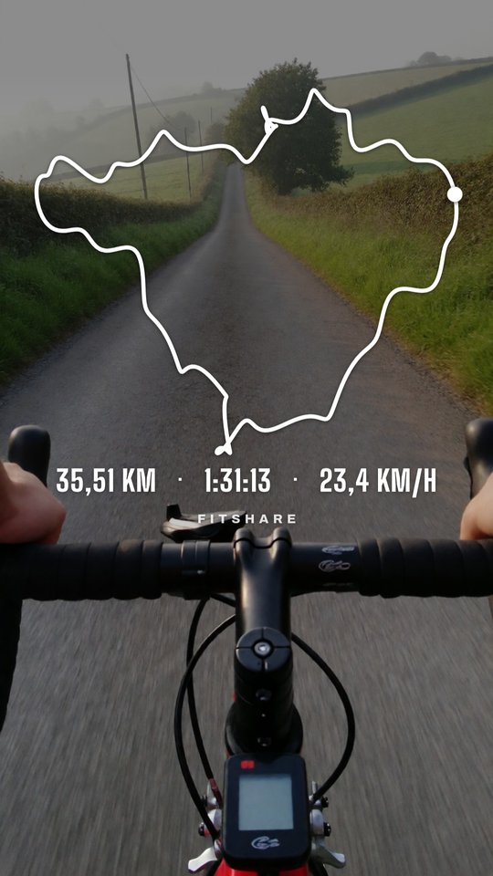
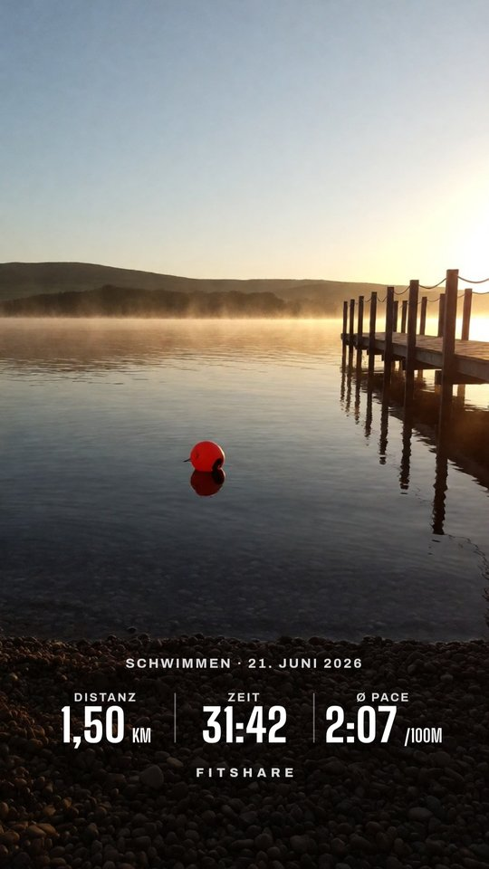
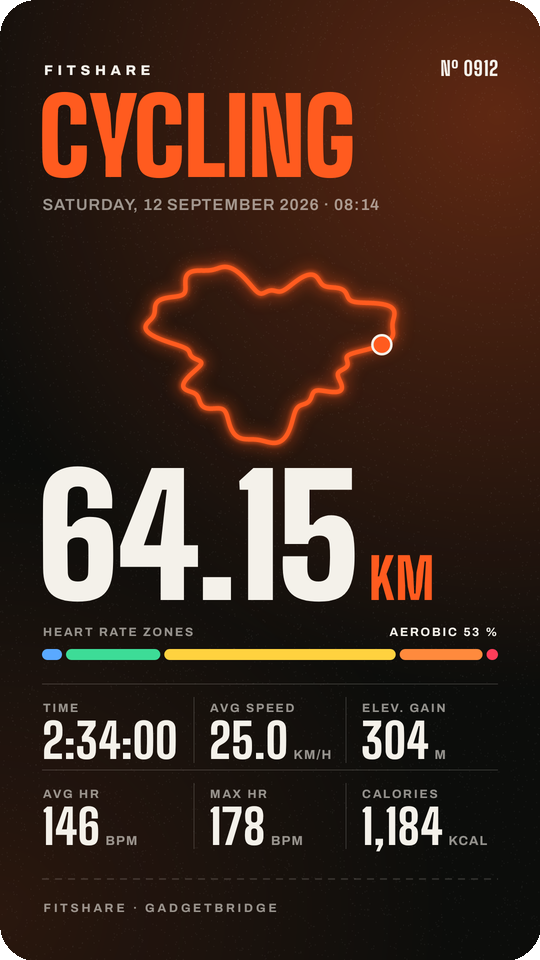

GARMIN CONNECT
Your Garmin Connect workout as an Instagram story sticker
Garmin Connect's share picture has Garmin's layout, and you can't move its parts around. FitShare reads the numbers from it and draws a transparent sticker in your style. You don't need a Garmin Connect+ subscription.
- In Garmin Connect, open the activity and tap the share icon. If Garmin offers several options, pick the one that shares a picture. On an iPhone, save the picture and open it in the web app.
- Pick FitShare. It reads distance, time, pace or speed, heart rate, elevation and calories off the picture.
- For the route, open the same activity on connect.garmin.com, click the gear icon and export it as GPX. Share the file to FitShare on the phone.
- Choose a layout, the stats and a colour, then tap Save PNG.
- In Instagram, open a story, tap Stickers → Photo and pick the PNG.



Download the APKOpen in the browser
The APK needs Android 8.0 or newer, no account, no internet permission. The web app runs on iPhone, Android and desktop with nothing to install; pictures and files never leave the device.
Questions
Do I need Garmin Connect+?
No. FitShare works with the free Garmin Connect app. It only needs the picture the Share button already makes.
Why does the sticker lack a value I see in Garmin Connect?
FitShare reads what is on the share picture. If the picture shows four stats, you get those four. The GPX adds route, distance, time and elevation.
Does it work with a Garmin synced by Gadgetbridge?
Yes. Share the FIT file from Gadgetbridge instead of a picture.
Garmin and Garmin Connect are trademarks of Garmin Ltd. FitShare is an independent project.